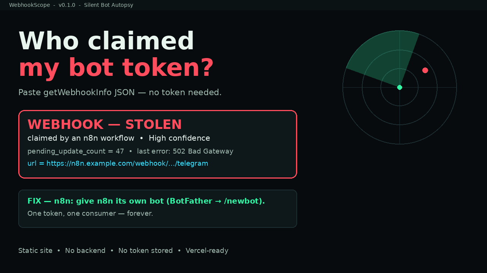

● SILENT BOT AUTOPSY
Who claimed
my bot token?
Your Telegram bot went silent. The process is running, the logs look healthy — and its updates are going somewhere else. Paste your getWebhookInfo JSON below. No token, no signup, no server. In seconds you get a verdict, a fingerprint of whoever claimed the token, a timeline, and the exact fix for your stack.

DEMO above the fold — the 3-day silent bot, diagnosed in 10 seconds. Real demo, labelled DEMO, no real token. Watch the 18-second demo video ↓
🔍 Silent Bot Autopsy
Paste the raw JSON from https://api.telegram.org/bot<TOKEN>/getWebhookInfo — open that URL in a browser tab, copy the JSON, paste it here. The JSON contains no secret. Your token never touches this page in the default flow.
Paste JSON and click “Autopsy my bot”, or load the demo. The demo runs automatically on first load.
Or check live with a token (optional, browser-only, collapsed by default)
Only if you want it: paste a token, this page calls api.telegram.org directly from your browser. No server, nothing stored, nothing sent anywhere else. The field is cleared from the page as soon as the check finishes.
After a live check, consider revoking the token in BotFather (/revoke) and using a fresh one — especially on a shared machine. JSON-paste is the safer default, and it gives the full verdict.
▶️ How an update travels — polling vs webhook
Telegram delivers a bot's updates to one consumer only: either long polling (getUpdates) or one webhook URL. Never both, never two pollers. Press Play and watch one update travel — then break it in the Failure Lab below.
Step 0/5 — press Play or Step.
| # | Time | Source | Destination | Info |
|---|---|---|---|---|
| No updates on the wire yet. | ||||
🧪 Failure-injection playground
Flip a switch and watch the queue grow. These are simulations — nothing here touches a real bot.
Simulated pending_update_count: 0 · verdict: POLLING — healthy
🧬 Paste-your-Update inspector
Paste any Telegram Update JSON and see it decoded field by field — which update type it is, which handler it matches, and the sendMessage call it should produce.
Coming next (v2 — not in v0.1.0)
Update Coverage X-Ray · Live Handler Trace · Time-Travel Replay. They are separate features, listed here only so you know the roadmap. v0.1.0 is the Autopsy + Flow Explorer, and it is complete on its own.
🔒 Token safety — read this first
- JSON-paste is the default.
getWebhookInfooutput contains no secret. That is the whole diagnosis. - Live mode is optional and browser-only. The token is fetched to
api.telegram.orgfrom your browser, never sent to WebhookScope (there is no server), never stored, and cleared from the page after the check. - This page never calls
deleteWebhookorsetWebhook. You copy the command and run it yourself. That is deliberate. - Fingerprinting is probabilistic. Telegram publishes no “who set this webhook” API. Every verdict carries a confidence and its evidence — unknown hosts stay Unknown, never a guess.
- Past claim times cannot be reconstructed exactly. Telegram exposes only
last_error_dateand the current pending count. The timeline is built by sampling forward, honestly labelled as a window, never an invented timestamp.